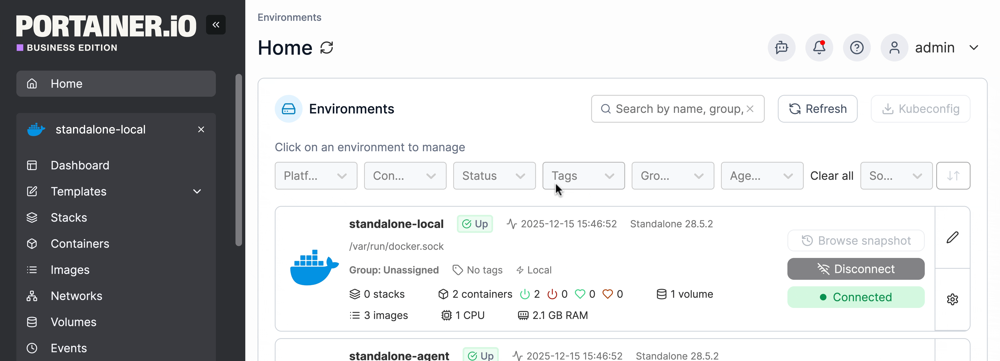
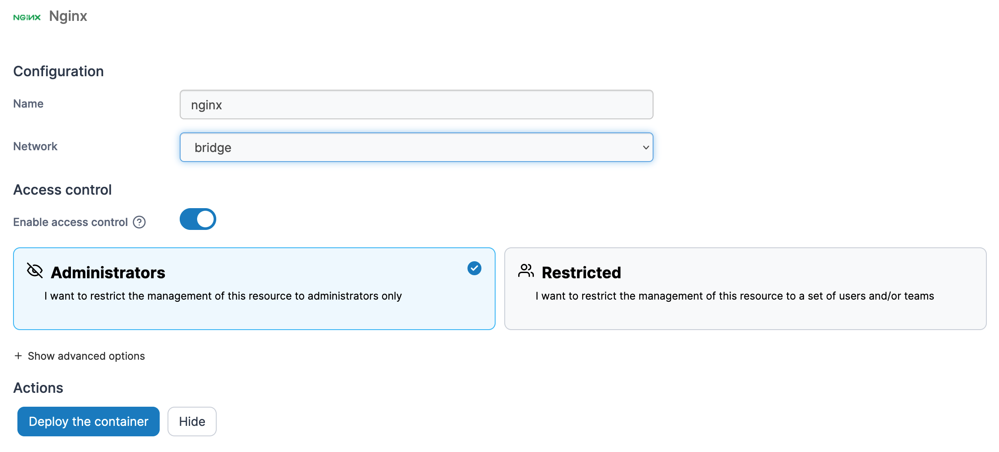
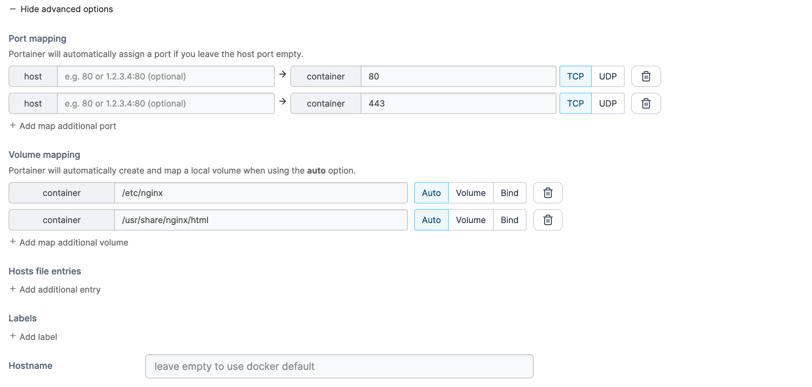

Welcome to LegoxOS
The ultimate, ready-to-use Linux distribution for Software Engineers.
What is LegoxOS?
LegoxOS is a customized Linux distribution built specifically for developers. It eliminates the hassle of setting up development environments by baking all essential tools, languages, and IDEs directly into the OS. Out of the box, you get instant access to Node.js, Python, Go, PHP, Docker, and various modern GUI applications.
Disabling Autostart
This documentation opens automatically on startup by default. If you want to disable it, simply run this command in your terminal:
rm ~/.config/autostart/legoxos-docs-autostart.desktop
Developer Tools (CLI)
Modern, fast, and pre-configured command-line tools.
PyEnv
Easily switch between multiple Python versions.
pyenv install 3.11.4
pyenv global 3.11.4
Golang (GVM)
Easily switch between multiple Go versions using GVM.
gvm install go1.20
gvm use go1.20 --default
PHP
Switch between installed PHP versions using update-alternatives.
sudo update-alternatives --config php
Pre-installed Apps
Ready to use graphical applications.
Visual Studio Code
The world's most popular code editor, pre-configured and ready to use.
Official Docs ↗OnlyOffice
Powerful and complete office suite fully compatible with MS Office formats.
Official Docs ↗Web Browsers
Modern and fast web browsers (Chromium and Firefox) for browsing and testing.
Official Docs ↗ | Official Docs ↗Communication & Media
Discord for communication, VLC for media playback.
Official Docs ↗ | Official Docs ↗Portainer (Database Manager)
Manage your local databases visually through Docker.
Why Portainer?
Instead of installing MySQL, PostgreSQL, or Redis manually on your host machine, LegoxOS uses Portainer to manage them inside Docker containers. This keeps your system clean and allows you to run multiple versions easily.
Deploy a container


